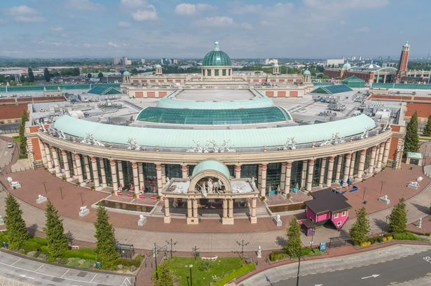

Trafford Centre
The Trafford Centre is a large indoor shopping centre and leisure complex in Greater Manchester, England. Located in Urmston in the Metropolitan Borough of Trafford, the centre is within the Trafford Park industrial estate, five miles west of Manchester city centre.
